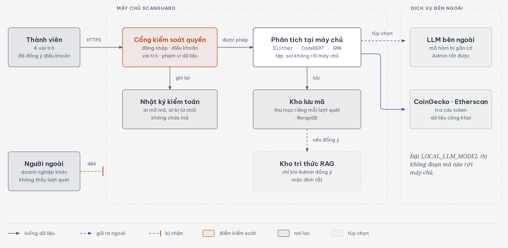

Bảo vệ mã nguồn tải lên
Hoàn thành 3/3 yêu cầu Đang chạy trên scanguard.ptitai.org
- Vấn đề
- Hợp đồng và mã nguồn chưa công bố có thể chứa thông tin cần bảo vệ.
- Yêu cầu
- Giới hạn quyền, thời gian lưu và khả năng xóa mã; mô tả xử lý tại máy chủ/dịch vụ ngoài.
- Minh chứng
- Sơ đồ luồng dữ liệu, cấu hình quyền truy cập và demo xóa tệp.

Giới hạn quyền
4 vai trò, máy chủ kiểm tra ở mọi API.
Developer, Non-tech chỉ thấy mã của mình.
Người ngoài nhận 404, bị ghi nhật ký.Thời gian lưu
Mặc định 30 ngày, Admin chỉnh 1 đến 365.
Tác vụ nền tự xóa mỗi giờ.
Ngày tự xóa hiện trên từng kết quả.Khả năng xóa mã
Một hàm xóa cho cả 4 nơi lưu mã.
Xóa lượt quét, dự án, tài khoản.
Lịch sử xóa không chứa mã.Máy chủ và dịch vụ ngoài
Tệp .sol chỉ nằm trên máy chủ.
Chỉ mã hàm bị gắn cờ ra LLM ngoài.
Mặc định bật, Admin tắt được.